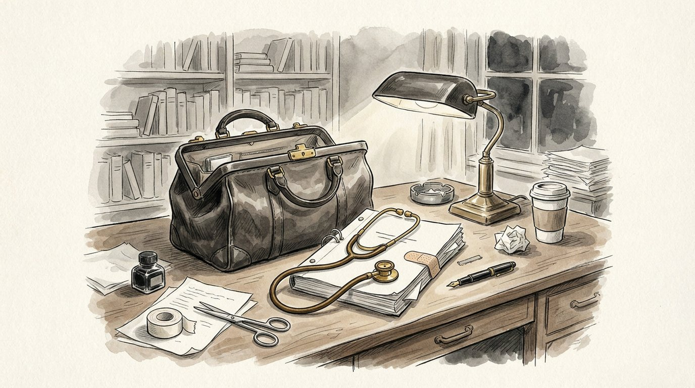

What does a script doctor do? Inside Hollywood's uncredited rewrite
Some of the best-known scenes in movie history were written by people whose names aren't in the credits. Here's how script doctoring actually works, from someone who has worked on both sides of it.


What a script doctor is
A script doctor is an experienced writer hired to rewrite or polish parts of a screenplay that's already in development, usually for a producer or studio and usually without screen credit. The job is to fix specific problems fast, not to start over.
On the studio side, I hired writers for this kind of work and sat in the rooms where the decision got made: the movie is greenlit, the start date is real, and something in the script still doesn't work. Earlier in my career I did script doctoring myself. It's one of the least understood jobs in the business, mostly because the people who do it rarely talk about specific films.
What script doctors are hired to fix
Most script doctor jobs are targeted: a character, a set of scenes, the dialogue or the jokes, rather than the whole script.
- Dialogue polish. Making characters sound distinct, sharper or more natural. Often done for a specific actor.
- Comedy punch-up. Adding or replacing jokes, sometimes with a room of comedy writers working through the script scene by scene.
- A character who isn't landing. Clarifying what a lead or villain wants, or deepening a supporting role an actor has signed on to.
- Structural problems. A second act that sags, an ending that doesn't pay off, a reveal that comes too early.
- A single key scene. Sometimes the whole job is one scene everyone knows is wrong.
- Practical changes. Rewriting around a budget cut, a lost location or a casting change.
When script doctors are brought in
Script doctors usually come in late: close to a greenlight, in pre-production, or even during shooting, when there's no time to start over with a new writer.
That timing shapes the work. A script doctor has days or weeks, not months. They're working within a structure, a budget, a cast and a director's vision that are already locked. The best ones are diplomats as much as writers. They figure out quickly what the director, producers and stars actually need, then deliver pages that serve all of them.
Famous uncredited rewrites
Some of Hollywood's most celebrated writers have done uncredited script doctoring, and a few famous scenes came from it.
- The Godfather. Francis Ford Coppola brought in Robert Towne to rewrite the late garden scene between Vito and Michael. When Coppola accepted the Oscar for the screenplay, he thanked Towne, saying it was Towne's scene, as Time recounts.
- Carrie Fisher. Best known as an actor, she was for years one of the most sought-after script doctors in town. SlashFilm notes her uncredited work on films from Hook to Last Action Hero.
- Tom Stoppard. The playwright did uncredited work on films including Indiana Jones and the Last Crusade and The Bourne Ultimatum, according to Wikipedia's script doctor entry.
- Speed. The same entry quotes Joss Whedon saying most of the film's dialogue was his.
Notice the pattern. These are writers with strong voices and a reputation for solving problems quickly. That's what a studio is paying for.
Why most script doctors get no credit
Script doctors usually go uncredited because Writers Guild credit rules require a large share of the final script, and a polish rarely reaches that threshold.
Under the WGA's credit rules, a subsequent writer on an original screenplay generally has to contribute 50 percent or more to the screenplay to share screenplay credit, according to the Guild's own credits guide. A week of dialogue polish or a rewritten third act, however important, usually doesn't come close. So the script doctor gets paid, and the credit goes to the writers whose work makes up most of the script.
Many doctors are fine with that. The pay can be good, the work is fast, and as the Wikipedia entry notes, some prefer not to have their names on films that struggle anyway.
Script doctor vs. script consultant
A script doctor rewrites the script; a script consultant helps the writer rewrite it. The difference is who holds the pen.
That matters a lot if you're a writer with a spec. Your script is your sample. Its whole job is to show reps, producers and showrunners what you can do. If someone else rewrites it, it stops doing that job. A consultant or a good set of notes leaves you with a better script that's still yours. I lay out all the options in script coverage, script notes or a script consultant.
Do you need a script doctor?
If you're a producer with a project in development and a deadline, a script doctor may be exactly what you need; if you're a writer trying to break in, you almost certainly want notes instead.
- You're a producer or director. You have a script, financing or a start date, and specific problems that need fixing fast. That's the classic script doctor job.
- You're a writer with a spec. You need a diagnosis and a plan, so the next draft is better and still sounds like you. Start with notes or a consultant read.
- You're not sure. Get notes first. If the problems turn out to be bigger than a rewrite you can do yourself, you'll know exactly what kind of help to look for.
Either way, before anyone rewrites a page, get clear on what's actually wrong. Often the problem everyone is staring at is a symptom of something that happened forty pages earlier.
Frequently asked questions
What does a script doctor do?
A script doctor is an experienced writer hired to rewrite or polish specific parts of a screenplay that's already in development, such as dialogue, jokes, a character or key scenes, usually for a producer or studio.
Do script doctors get credit?
Usually not. Under WGA credit rules, a subsequent writer on an original screenplay generally needs to contribute 50 percent or more to the screenplay to share credit, and a polish rarely reaches that threshold.
What's the difference between a script doctor and a script consultant?
A script doctor rewrites the script. A script consultant reads it and helps the writer do the rewrite, so the script stays the writer's own work.
Should I hire a script doctor for my spec script?
Usually not. A spec is your writing sample, so it needs to be your writing. Notes or a consultant read will help you improve it while keeping your voice.
Do you do script doctoring?
I've done script doctoring for studios. For rewrite and writing services, contact me directly to talk about the project. For most writers, I recommend starting with screenplay notes.